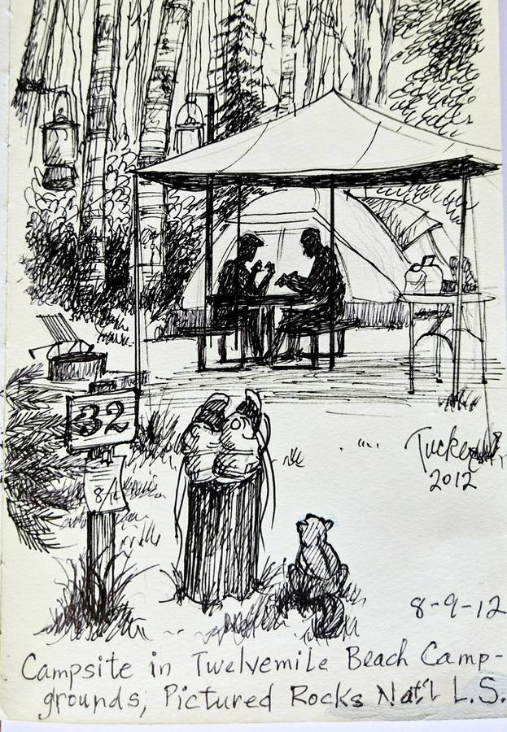

Field Sketches · Tezos · Live from the blockchain
Steve Tucker is 83. He's spent a lifetime stopping wherever the world looked interesting and drawing it — in ink, on paper, in the moment. He writes the place and date on every sketch. This site reads them.

The story
How the world found out about him.
Steve Tucker is 83 years old. His wife passed away a few months ago. He visits Spring Mill Lodge in Indiana and draws. He taught art in Terre Haute his whole life, did courtroom sketches for court cases, and has been recording the world around him in ink for decades.
A stranger named Matt Stamper found him at the lodge, photographed his sketchbooks, and shared them on X. The thread went viral. The Tezos community stepped in to put Steve's work on-chain, so it lives forever.
Read the full thread on X ↗Where he drew
Hover a pin to see the sketch. Click to open.
The drawings
Loaded live from the Tezos blockchain. Steve mints, the site updates.
Your Collection
—
Connect your wallet to see which sketches you hold.
On-chain
Every holder, read live from the Tezos blockchain.
Reading the blockchain…